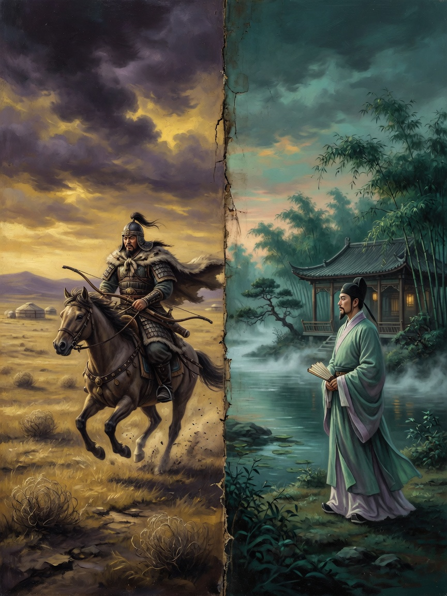
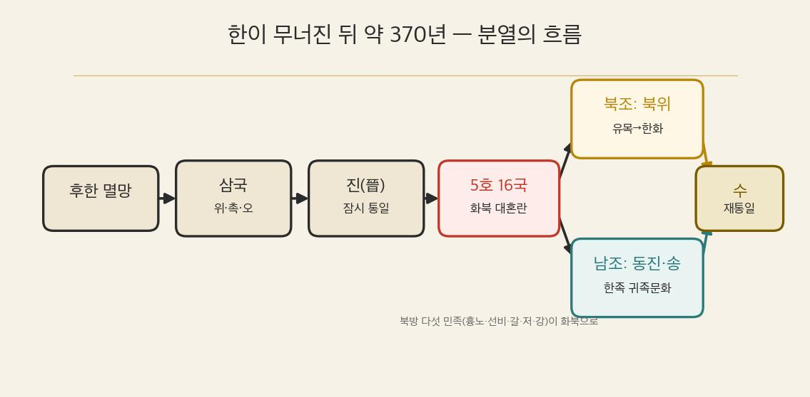
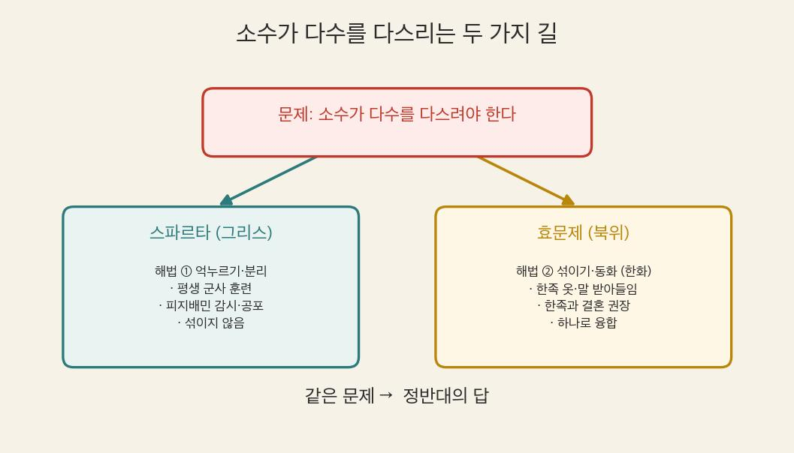
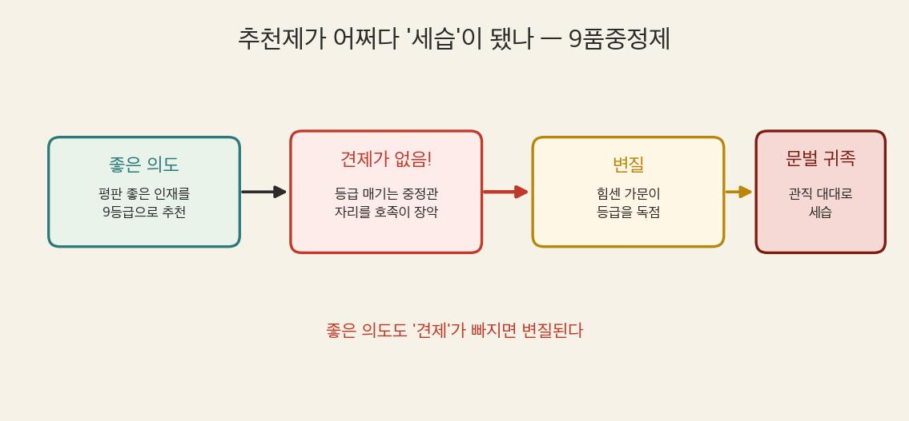
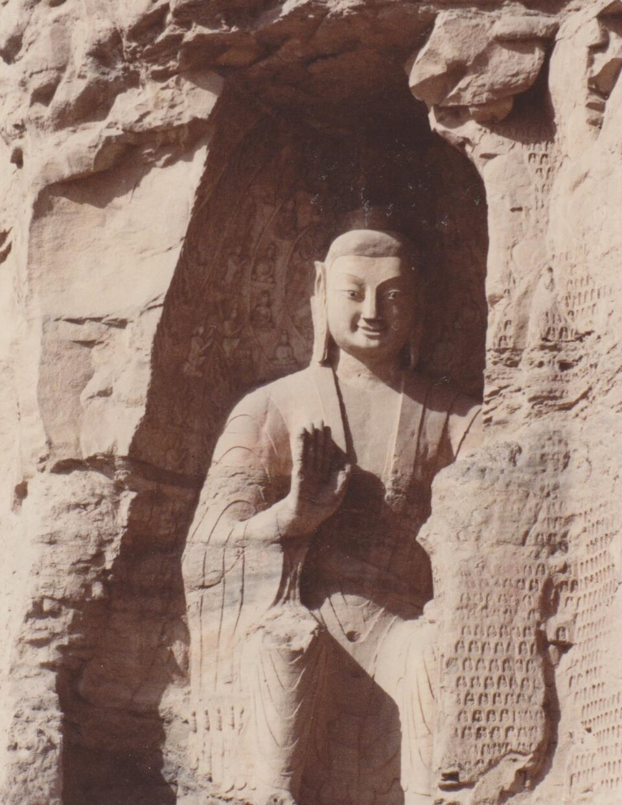
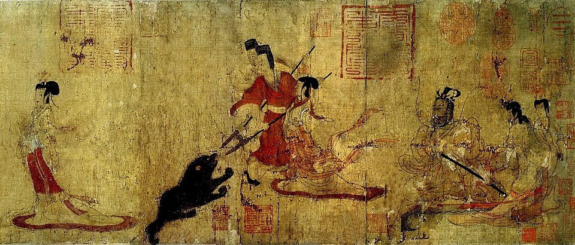

역사① Ⅲ단원 3-1-1 — 한(漢)이 무너지자, 중국은 왜 370년이나 갈라졌을까? (위진 남북조)
한(漢)이 무너지자, 중국은 왜 370년이나 갈라졌을까?

🎙️ 북위의 어느 아침. 선비족 소녀 아단은 거울 앞에서 낯선 옷을 입는다. 어제까지 입던, 말 타기 편한 선비족 옷 대신 소매가 긴 한족(漢族) 옷. 이름도 선비식에서 한자 이름으로 바꿔야 하고, 말도 한족 말로 해야 한다. 모두 황제(효문제)의 명령이었다. "우리 것을 버리고, 왜 한족처럼 살아야 하지?" 아단의 이 질문에, 370년 갈라졌던 중국의 비밀이 들어 있다.
📌 학습 목표
- 후한 멸망 이후 위진 남북조의 분열이 어떻게 전개되었는지 인과관계로 설명할 수 있다.
- 북조와 남조의 정치·사회·문화 특징을 비교할 수 있다.
- 9품중정제가 문벌 귀족을 낳은 과정을 오늘날 '공정한 선발' 문제와 연결해 자기 관점으로 서술할 수 있다.
✨ 오늘의 고급 단어
| 단어 | 쉽게 말하면 |
| 화북(華北) | 황허강 유역의 중국 북부 — 옛 중국 문명의 중심지 |
| 강남(江南) | 창장강(양쯔강) 이남의 중국 남부 |
| 호족(豪族) | 지방의 힘센 토착 세력 — 땅과 사람을 많이 거느린 유력 가문 |
| 문벌 귀족(門閥貴族) | 門(가문)+閥(공로·지위) — 대대로 높은 관직을 독차지해 '가문의 이름값'이 곧 신분이 된 귀족 |
| 9품중정제(九品中正制) | 九品(아홉 등급)으로 나눠 中正(중정관)이 추천하는 制(제도) — 인물을 9등급으로 매겨 관리로 뽑음 |
| 한화(漢化) 정책 | 북방 민족이 한족의 옷·말·제도를 따르게 한 정책 ('漢化' = 한족처럼 됨) |
| 청담(淸談) 사상 | 어지러운 정치 대신 맑고(淸) 고상한 이야기(談)를 나눈 풍조 |
| 도교(道敎) | 민간 신앙과 도가 사상이 결합한 중국의 토착 종교 |
📖 1단계: 400년 갔던 한(漢)이 무너지자, 무슨 일이?
앞서 배운 한(漢)은 약 400년간 동아시아의 중심이었다. 그러나 후한이 멸망한 뒤, 중국은 하나로 모이지 못하고 ①위·촉·오 세 나라로 갈라졌다(삼국 시대). 위를 이은 ②진(晉)이 잠시 세 나라를 통일했지만, 왕실 다툼으로 혼란이 계속되며 곧 무너졌다.
(교과서 원문: "후한이 멸망한 뒤 중국은 위·촉·오로 나뉘었다. 위를 이은 진(晉)이 세 나라를 통일하였으나 왕실의 다툼으로 혼란이 계속되었다." — 비상교육 역사① p.67)
📖 2단계: 북쪽엔 유목민, 남쪽엔 피란민 — 분열의 지도
진이 흔들리자 북방의 유목 민족인 ③5호가 화북으로 밀려 들어와 여러 나라를 세웠다(5호 16국). 북방 민족에게 밀려난 한족은 창장강 남쪽인 ④강남으로 내려가 ⑤동진을 세웠다. 이후 선비족이 세운 ⑥북위가 화북을 통일했고, 강남에는 한족 왕조들이 차례로 이어졌다. 이렇게 한이 멸망한 뒤부터 ⑦수가 다시 중국을 통일할 때까지의 약 370년을 위진 남북조 시대라고 한다.
(교과서 원문: "…한이 멸망한 이후부터 수가 중국을 통일하기까지의 시기를 위진 남북조 시대라고 한다." — 비상교육 역사① p.67)
📚 '5호 16국'이 뭐야? — 5호(五胡) = 화북으로 내려온 다섯 북방 민족(흉노·선비·갈·저·강). 16국 = 이들이 (일부 한족과 함께) 화북에 세운 여러 짧은 나라들(대표로 16개를 꼽음). 즉 "다섯 민족이 세운 열여섯 나라가 세워졌다 사라지길 반복한 약 130년의 혼란기"를 가리킨다. 이 어지러운 화북을 끝내 하나로 통일한 나라가 바로 선비족의 북위다.
💡 한 줄 지도: 후한 ➡️ 삼국(위·촉·오) ➡️ 진(晉) 통일 ➡️ 5호 16국 ➡️ 남북조(북조·남조)

📖 3단계: 북조 vs 남조 — 두 세계가 갈라지다
📚 왜 '북조·남조'? — 중국이 남북으로 갈라졌기 때문. 창장강 북쪽(화북) 왕조들 = 북조, 남쪽(강남) 왕조들 = 남조. 둘이 위아래로 나란히 맞선 시기라 합쳐서 '남북조'라 부른다.
화북을 차지한 북조는 유목 민족이 다수의 한족을 다스리는 세계였다. 북위의 ⑧효문제는 오히려 한족 문화를 적극 받아들이는 한화(漢化) 정책을 폈다 — 선비족 옷과 말을 금지하고, 한족과의 결혼을 권장했다(앞의 아단 이야기). 한편 강남으로 피란한 한족이 세운 남조에서는 귀족 중심의 우아한 문화가 발달했다.
💡 효문제는 왜 자기 민족 문화를 버렸을까? — 선비족은 수가 적은데, 다스려야 할 한족은 훨씬 많았어. 힘으로만 누르면 반발이 크지. 그래서 한족의 글·제도·문화를 받아들여 "우리도 너희와 같다"며 한족의 마음을 얻고 나라를 안정시키려 한 거야. (도입에서 아단이 한족 옷을 입어야 했던 이유!)
⚖️ 2단원에서 배운 스파르타랑 비교해 봐! — 스파르타도 소수의 시민이 다수의 피지배민(헤일로타이)을 다스리는 똑같은 문제를 안고 있었어. 그런데 해법은 정반대! 스파르타는 억누르고 분리(평생 군사 훈련·감시·공포)를 택했고, 효문제는 섞이고 동화(한화)를 택했지. 같은 문제, 정반대의 답 — 너라면 어느 쪽을 택했을까?

(교과서 원문: "북위는 한족의 제도와 문물을 받아들였다. 특히 효문제는 선비족의 복장과 언어를 금지하고, 한족과의 결혼을 권장하였다." — 비상교육 역사① p.67)
⚠️ 자주 하는 오해: "한화 = 한족이 북방 민족을 이긴 것"? 아니다. 북방 민족과 한족의 문화가 섞이며(융합) 중국 문화가 더 풍부해졌고, 이것이 다음 시대인 수·당 문화의 밑거름이 되었다.
📖 4단계: 추천으로 뽑았는데 왜 '금수저'만? — 9품중정제와 문벌 귀족
위진 남북조 시대에는 추천으로 관리를 뽑는 ⑨9품중정제를 실시했다. 지역의 인물을 9개 등급으로 매겨 중앙에 추천하는 제도였다. 그런데 추천 권한을 쥔 사람들이 ⑩호족(지방의 유력 가문) 자제만 높은 등급으로 밀어주면서, 결국 대대로 관직을 독차지하는 ⑪문벌 귀족이 생겨났다.
(교과서 원문: "위진 남북조 시대에는 추천으로 관리를 뽑는 9품중정제가 실시되었다. 그 결과 지방 호족이 중앙 정부로 나아갔고, 대대로 관직을 독차지하면서 문벌 귀족으로 성장하였다." — 비상교육 역사① p.67)

💡 ★ 핵심 포인트: 좋은 의도(추천)도 견제가 없으면 '기회의 세습'으로 변질된다.
🗳️ 오늘과 잇기 — 우리 선거관리위원회는 선거를 공정하게 하라고 헌법으로 독립성을 보장받는 기관이야. 그런데 고위직 자녀 특혜 채용 논란·투표 관리 부실이 드러나면서 "독립성은 큰데 견제가 약하다"는 지적을 받았어. 9품중정제처럼, 좋은 제도도 견제가 빠지면 변질될 수 있다는 거지.
📖 5단계: 어지러운 세상이 낳은 문화 — 불교·도교·청담
혼란한 시대일수록 사람들은 마음 둘 곳을 찾았다. 북조에서는 '황제는 곧 부처'라며 불교로 황제의 권위를 높였고, 거대한 ⑫석굴 사원이 세워졌다. 민간 신앙과 도가 사상이 결합한 ⑬도교도 발전했다. 남조에서는 어지러운 정치를 떠나 맑고 고상한 이야기를 나누는 ⑭청담 사상이 유행했고(죽림칠현), 고개지의 그림·도연명의 시·왕희지의 ⑮서예 같은 화려한 귀족 문화가 꽃폈다.
(교과서 원문: "북위에서는 '황제는 곧 부처'라고 하며 불교를 바탕으로 황제의 권위를 높이려고 하였다." / "동진과 남조에서는 화려하고 우아한 귀족 문화가 발달하였는데, 고개지의 그림, 도연명의 시, 왕희지의 서예 등이 유행하였다." — 비상교육 역사① p.68)
💡 석굴 사원·불상이 왜 그렇게 컸을까? — 거대 불상은 두 가지를 한 번에 했어. 황제에겐 '부처처럼 우러러보라'는 권위 장치(북위는 불상 얼굴을 황제 모습으로 새겼대), 백성에겐 전란 속에서 기댈 수 있는 마음 둘 곳. 그래서 황제가 앞장서 후원하니 불상이 폭발적으로 늘어난 거야.
📚 정의형 — 청담(淸談): 맑을 청, 말씀 담. 어지러운 현실 정치를 피해 노장(老莊) 사상과 철학을 논하던 귀족들의 풍조. 대나무 숲에 모였다는 '죽림칠현'이 대표한다.



🔗 핵심 정리 — 인과 사슬
후한 멸망 → 삼국(위·촉·오) → 진(晉) 통일 → 왕실 다툼으로 혼란 → 5호 16국(북방 민족 화북 진출) → 한족 강남 이주(동진) → [북조] 북위 효문제 한화 정책 ↔ [남조] 한족 귀족 문화 → 9품중정제 → 호족 성장 → 문벌 귀족(기회의 세습) → 불교(석굴 사원)·도교·청담(죽림칠현)·귀족 문화 발달 → 북방 + 한족 문화 융합 → 수·당 문화의 밑거름
💡 오늘의 한 줄: 갈라진 370년은 '혼란'이자, 유목과 한족이 섞여 다음 시대(수·당)를 준비한 '용광로'였다.
📊 한눈에 비교 — 북조 vs 남조
| 비교 항목 | 북조 (화북) | 남조 (강남) |
| 위치 | 황허강 유역(화북) | 창장강 이남(강남) |
| 지배층 | 북방 유목 민족(선비족 등) | 강남으로 피란한 한족 |
| 대표 왕조 | 북위 | 동진·송 등 한족 왕조 |
| 핵심 정책·특징 | 효문제의 한화 정책(융합) | 강남 개발·귀족 문화 |
| 대표 종교 | 불교('황제는 곧 부처')·석굴 사원 | 청담 사상·도교 |
| 대표 문화 | 불교 조각(석굴 사원) | 고개지 그림·도연명 시·왕희지 서예 |
| 신분 제도 | 9품중정제 → 문벌 귀족 | 9품중정제 → 문벌 귀족 |
| 역사적 의의 | 북방·한족 융합 → 수·당의 밑거름 | 강남 개발 → 훗날 중국 경제 중심 이동의 출발 |
❓ OX 퀴즈
| 번호 | 문장 | O/X |
| 1 | 위진 남북조 시대는 후한이 멸망한 뒤부터 수가 중국을 통일할 때까지의 시기다. | O |
| 2 | 효문제의 한화 정책은 한족 문화를 금지하고 선비족 문화를 지키려는 정책이었다. | X |
| 3 | 9품중정제는 시험을 치러 관리를 뽑는 제도였다. | X |
| 4 | 남조에서는 청담 사상과 귀족 문화가 발달하였다. | O |
OX 해설
1. (O) "한 멸망 ~ 수 통일까지"가 위진 남북조의 정확한 시간 범위.
2. (X) 반대다. 효문제는 선비족 옷·언어를 금지하고 한족 문화를 받아들이는 한화 정책을 폈다.
3. (X) 9품중정제는 추천제다. 시험으로 뽑는 과거제는 다음 차시(수 문제)에 처음 등장한다.
4. (O) 남조 = 청담(죽림칠현) + 고개지·도연명·왕희지의 귀족 문화.
✏️ 활동 1. 효문제의 신하가 되어 — 한화 정책 결재판
효문제가 한화 정책 3개 안건을 내놓았다. 당신이 효문제의 신하라면 각 안건에 찬성/반대와 이유를 쓰라. (정답 없음 · 근거가 핵심)
| 안건 | 찬성/반대 | 이유 |
| ① 선비족 옷을 금지하고 한족 옷을 입게 한다 | ||
| ② 선비족 말을 금지하고 한족 말을 쓰게 한다 | ||
| ③ 선비족과 한족의 결혼을 권장한다 |
예시 답안(찬성 입장): ③ 통혼은 두 민족의 갈등을 줄이고 하나의 나라로 묶는 가장 빠른 길이다. 소수의 선비족이 다수의 한족을 안정적으로 다스리려면 융합이 필요하다.
예시 답안(반대 입장): ② 말은 민족 정체성의 핵심이다. 언어를 잃으면 선비족의 고유 문화와 자부심이 사라져, 오히려 내부 반발을 부를 수 있다.
✏️ 활동 2. 북조 vs 남조 비교표 채우기
빈칸을 채워 두 세계의 차이를 정리해 보자.
| 비교 항목 | 북조 | 남조 |
| 지배층 | ||
| 대표 왕조 | ||
| 핵심 특징 | ||
| 대표 문화 |
예시 답안: 지배층 — (북조) 북방 유목 민족 / (남조) 피란 한족. 대표 왕조 — (북조) 북위 / (남조) 동진·송. 핵심 특징 — (북조) 효문제 한화 정책·문화 융합 / (남조) 강남 개발·귀족 문화. 대표 문화 — (북조) 불교 석굴 사원 / (남조) 청담·서예·그림.
✏️ 활동 3. 더 생각해 보기 (자기 생각 서술)
9품중정제는 분명 '추천으로 인재를 뽑자'는 좋은 의도로 시작했는데, 왜 결국 '문벌 귀족이 자리를 세습하는' 불공정한 제도로 변했을까? 오늘날에도 '추천서·스펙·인맥'으로 사람을 뽑는 경우가 있다. 공정한 선발이 되려면 무엇이 필요할지, 위진 남북조의 사례에서 배운 점을 들어 너의 생각을 써 보자. (AI에게 정답을 묻기보다, 네 경험과 판단으로)
예시 답안(교사 참고): 추천제는 '누가 추천하는가'에 권력이 쏠리면 무너진다. 9품중정제도 추천 권한을 쥔 중정관과 호족이 결탁하면서 변질됐다. 공정한 선발이 되려면 ① 추천 기준의 공개·기록, ② 추천자에 대한 견제와 책임, ③ 출신과 무관하게 능력을 검증하는 별도 장치(예: 시험)가 함께 있어야 한다. 실제로 이 문제를 풀려고 다음 시대(수)에 '과거제'가 등장한다.
다음 시간 예고
다음 시간 예고: 수·당의 통일과 동아시아 문화권 — 분열을 끝낸 수가 '과거제'로 문벌 귀족을 흔들고, 율령·불교·유교·한자가 한·중·일을 하나의 문화권으로 묶는다.